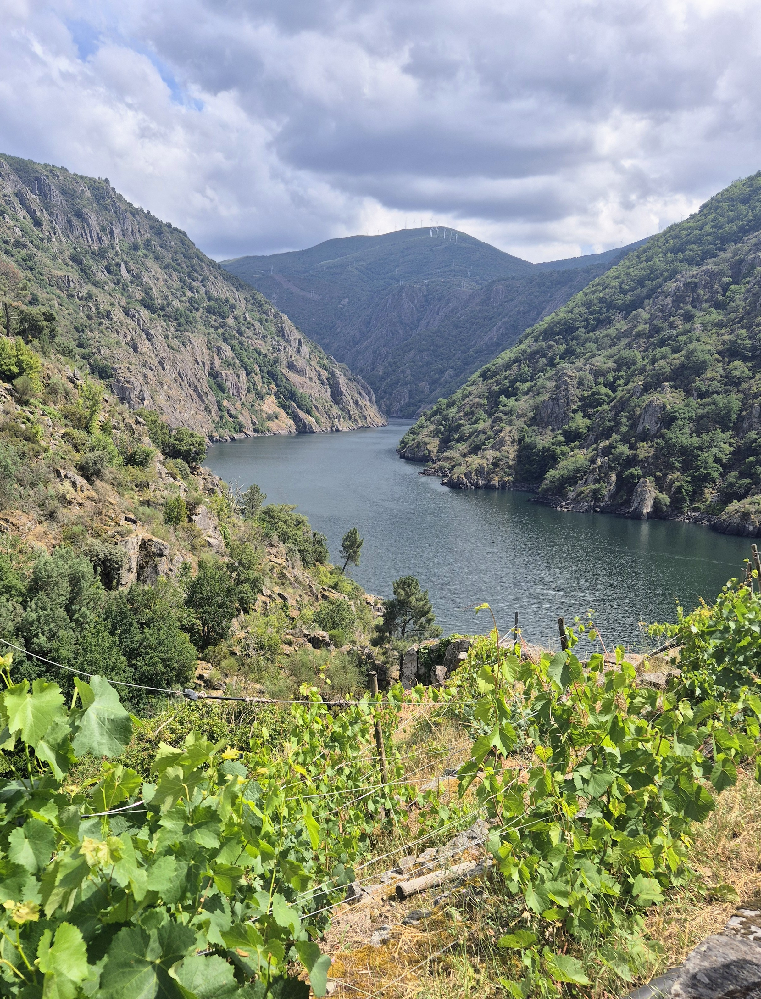
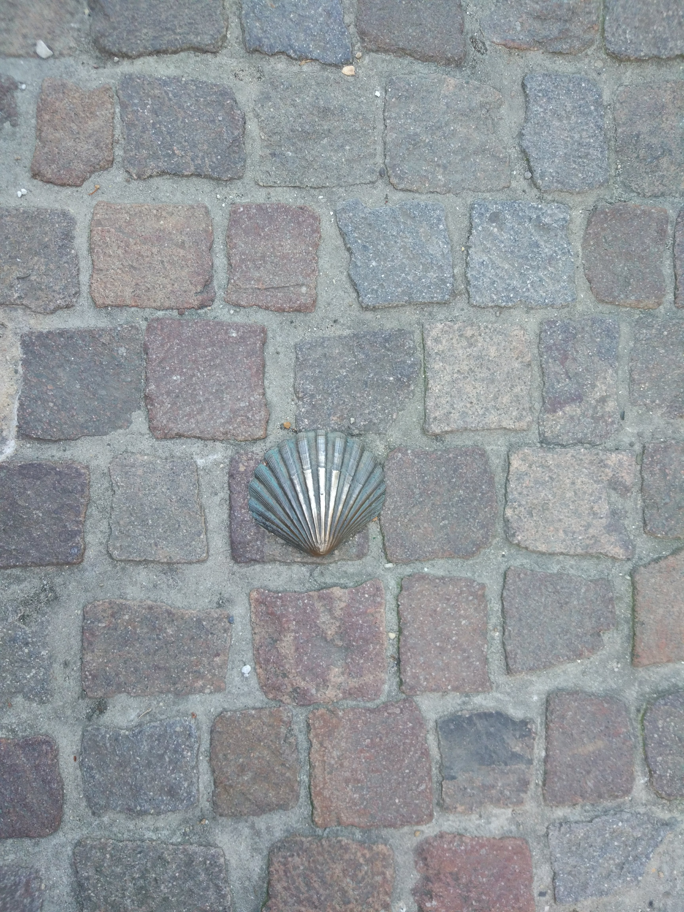

Atlanticca
We help Iberian destinations, hospitality and travel brands build strong partnerships with the UK market.
We help Iberian destinations, hospitality and travel brands build strong partnerships with the UK market.

Atlanticca is a London-based consultancy specialising in representation of Iberian destinations and travel companies in the UK. We help tourism boards, DMCs, hotels and hospitality business to strengthen their presence in the British market with an strategic approach focused on building long-term partnerships. Our approach is personal, collaborative and focused on sustainable growth.

We believe the strongest partnerships begin with genuine understanding of what a place can offer and how this is perceived. We value authenticy, craftsmanship and meaningful travel experiences that will leave a long-lasting impact on our guests.

We focus on the most distinctive, under-represented corners of Galicia that are still unknown by the British travellers. Places with an exceptional product, full of history and offering unique accommodation.

What we do
We work with Galician tourism businesses, vineyards, hotels and regional institutions at every stage of their UK market journey — from strategic advice to hands-on trade relationships.
Your presence in London, without the overhead. We build relationships with UK tour operators, travel advisors and wine buyers and manage them on your behalf.
We represent your business at key UK travel and wine trade events, from WTM London to the London Wine Fair — before, during and after the event.
We bring carefully selected UK travel trade to experience your destination first-hand — creating relationships that can turn interest into bookings.
Practical guidance for Galician businesses looking to understand, attract and convert British travellers.
Before investing in the UK market, understand where the real opportunities are. Honest analysis, positioning advice and bespoke opportunity assessments.
We work with tourism bodies and trade organisations to develop and execute practical UK market strategies.
Atlanticca was founded by Andrea López, a tourism and hospitality professional with over 15 years of experience in the UK market. She brings a deep understanding of how the British market thinks, what British travellers want, and how to communicate a destination in a way that resonates with UK buyers. Born with Galicia at the centre of everything, she founded Atlanticca to do what no London agency and no Galician institution could do alone: be genuinely fluent in both worlds and trusted on both sides of the bridge.
Interested in exploring opportunities in the UK? We'd love to hear from you.